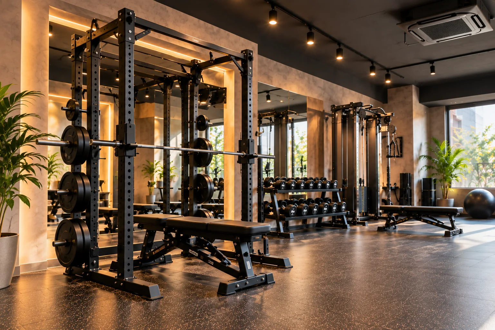
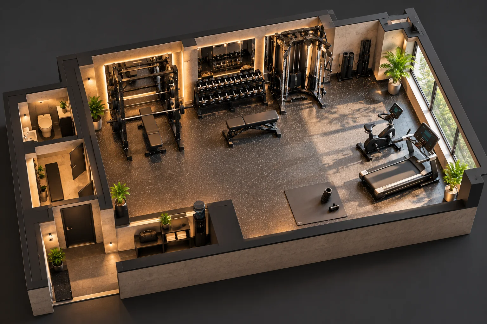
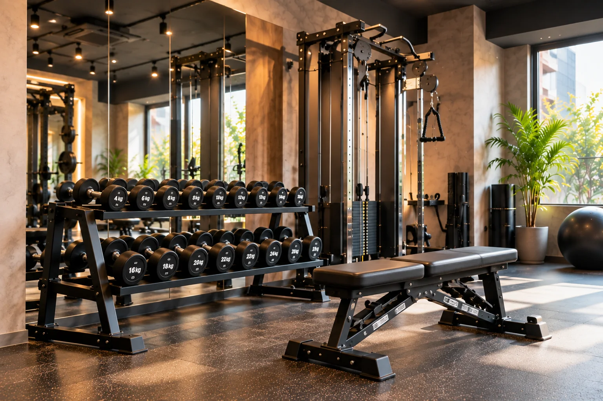
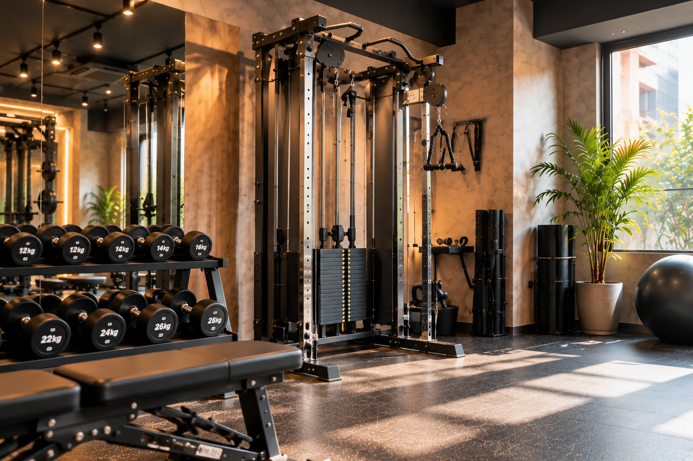
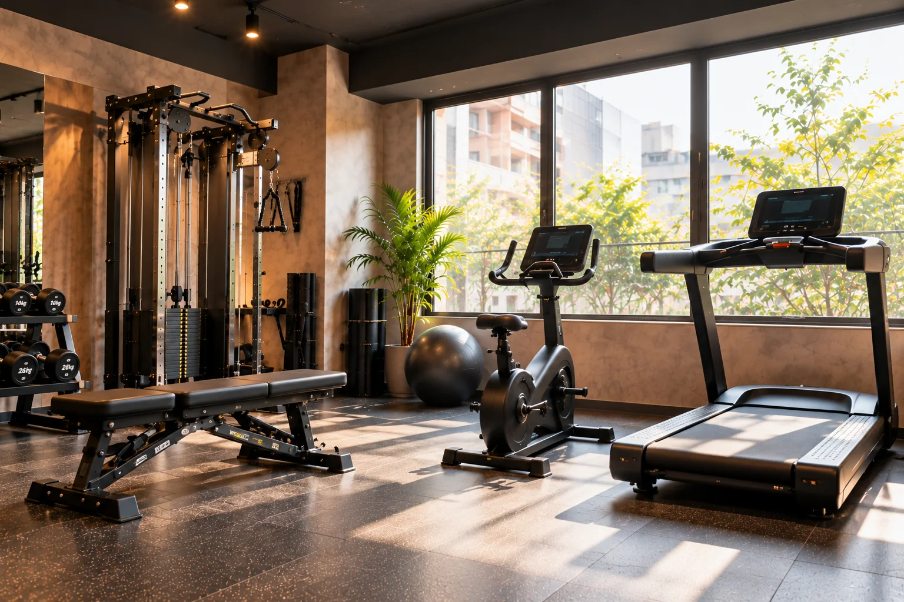

EQUIPMENT 01
TRAINING & FACILITY
ひとりで使う。
必要な日は、プロと使う。

01 / SELF TRAINING
空いている60分枠を予約して、完全貸切空間を自分のペースで利用します。SELFの利用は月会費7,000円に含まれます。

02 / PERSONAL TRAINING
目的に合わせてトレーナーを選び、60分間のマンツーマンサポートを追加できます。フォームやメニューに迷うとき、目標に合わせて取り組みたいときに利用できます。
03 / COMPARE
どちらも同じ完全貸切空間を60分利用します。違いは、トレーナーのサポートを追加するかどうかです。
| 比較項目 | SELF | PERSONAL |
|---|---|---|
| 利用スタイル | ひとりで自分のペース | トレーナーとマンツーマン |
| 料金 | 月会費7,000円に含む | ＋5,500円 / 60分 |
| おすすめ | 自分でメニューを進めたい方 | フォームやメニューのサポートが必要な方 |
| 予約時の選択 | SELFを選択 | PERSONALとトレーナーを選択 |
| 空間 | 完全貸切 | 利用者とトレーナーで使用 |
SPACE & EQUIPMENT
広さや設備数を競うのではなく、予約した60分を気持ちよく使えることを大切にしています。

トレーニング設備、更衣スペース、荷物置き場をひとつの貸切空間にまとめています。

EQUIPMENT 01

EQUIPMENT 02

EQUIPMENT 03

EQUIPMENT 04
設備について：シャワー設備はありません。
ONE ROOM.YOUR TIME.
SELFもPERSONALも、
予約した60分はあなたのための時間です。